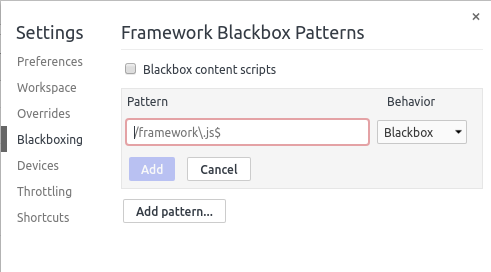
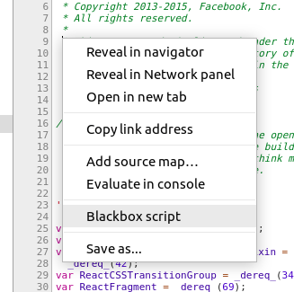
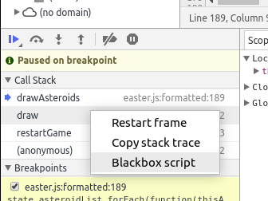

Blackboxing Scripts In Chrome DevTools
Chrome DevTools has a feature called blackboxing which allows you to ignore certain scripts when debugging. When a script is blackboxed, it’s hidden from the call stack pane and you don’t step into it when stepping through the code. This is really useful when debugging code that uses frameworks or libraries such as Ember, React or jQuery.
There are a few ways to blackbox a script:
Blackboxing in settings

In the settings section, go to the “Blackboxing” tab
Click “Add pattern…”
In the text box, enter either a script name or a regex pattern that will match scripts that you want to blackbox.
Click add
Blackboxing in the editor pane of the sources section

In the sources section, open the file you want to blackbox
Right click in the editor pane
Select “Blackbox script”
Blackboxing in the call stack pane of the sources section

When paused on a breakpoint, go to the sources section
In the call stack pane, right click on a function from the file you want to blackbox
Select “Blackbox script”